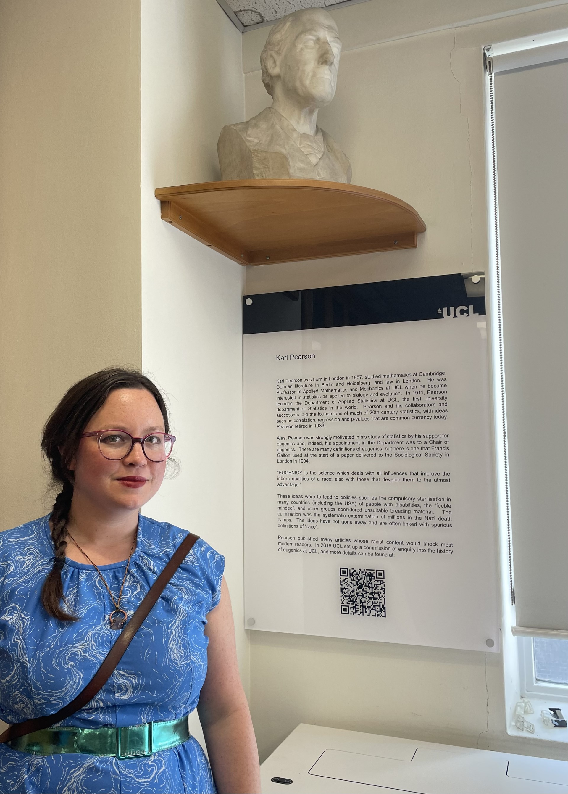

A lesson from history
This article is written by our very own Stephanie Dickinson, the Departmental Exhibition Keeper. She tells us about one of the ways in which we’ve interacting with the legacy of the Eugenics Inquiry. We are working in close contact with the Eugenics Legacy Education Project to ensure our present and future take active and positive action against the misdeeds of the past

As Exhibitions Keeper for Statistical Science at UCL, I noticed that we had a marble bust of Pearson in one of our study spaces in the department, which was in a room that had had its name changed for political reasons but the marble bust had remained, like a spectre on a viewing tower, gazing over the room in an ambiguous way. I had an understanding of the history of our department from sorting through the large collection of books and journals we had stored in our basement when I was re-arranging them to be more accessible, but I felt that others may not have gone through this process and may not appreciate the signifiers relating to the person who was looking down at us from the corner of the room. I suggested that we do something to change this situation, in keeping with other similar actions globally where many are engaging with decolonisation. It was agreed that a sign could be put up to explain and educate, to remove the unintended complicity. I sent out a call for contributions: Dr Simon Harden took the text originally written by Professor Tom Fearn (who was part of the Eugenics Inquiry) and condensed it, Professor Gianluca Baio (our Head of Department) made some final adjustments and I sent it to a sign maker to get manufactured and installed. The result is now on the wall in the MSc Study, which is 1-19 Torrington Place room 116.
Here’s the full text in our new sign.
Karl Pearson was born in London in 1857, studied mathematics at Cambridge, German literature in Berlin and Heidelberg, and law in London. He was Professor of Applied Mathematics and Mechanics at UCL when he became interested in statistics as applied to biology and evolution. In 1911, Pearson founded the Department of Applied Statistics at UCL, the first university department of Statistics in the world. Pearson and his collaborators and successors laid the foundations of much of 20th century statistics, with ideas such as correlation, regression and p-values that are common currency today. Pearson retired in 1933.
Alas, Pearson was strongly motivated in his study of statistics by his support for eugenics and, indeed, his appointment in the Department was to a Chair of eugenics. There are many definitions of eugenics, but here is one that Francis Galton used at the start of a paper delivered to the Sociological Society in London in 1904:
“EUGENICS is the science which deals with all influences that improve the inborn qualities of a race; also with those that develop them to the utmost advantage.”
These ideas, were to lead to policies such as the compulsory sterilisation in many countries (including the USA) of people with disabilities, the “feeble minded”, and other groups considered unsuitable breeding material. The culmination was the systematic extermination of millions in the Nazi death camps. The ideas have not gone away and are often linked with spurious definitions of `race’.
Pearson published many articles whose racist content would shock most modern readers. In 2019 UCL set up a commission of enquiry into the history of eugenics at UCL, and more details can be found at https://www.ucl.ac.uk/provost/inquiry-history-eugenics-ucl.